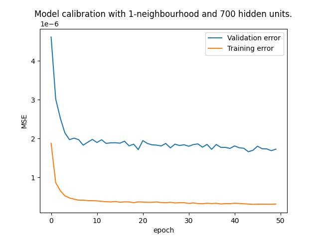

The development since the early 2010s, following an initial breakthrough in the late 80s has made deep learning one of the main tools when dealing with highly complex, non-linear problems.
Context
Deep learning is now used across a wide range of applications, like pattern detection in images, speech recognition, text generation… In the urban sciences, the renewed interest in deep learning has also brought to light work from the 90s on applying neural networks to problems involving a spatial dimension, such as spatial interaction models. The realm of applications however, still remains to be explored, hence this work.
Basics
Forward pass
The main idea behind this technology is to run an input data through multiple layers of processing ( depth coming from that ). Each layer, supposed to model the activity of a neuron, applies first an affine transformation of the form \(s=\boldsymbol{A}x+b\), where \(s,x,b\) are column vectors, \(\boldsymbol{A}\) is a matrix of weights. Second, the resulting vector is processed by a non-linear function, referred to as the activation. It is applied element wise to the output from the affine transformation. Popular functions include the hyperbolic tangent or ReLU (see image).
tanh and ReLU functions
Typical activation functions
Basics
The output of the successive application of layers to input data produces an output, which is then compared to the expected value from a training data set. An error measure is then used to compare how well does the output compare to the measured value. Depending on the type of input data used, these can be:
Mean squared error
\[L_2(\hat{y},y)=\|\hat{y}-y\|^2\]
Cross entropy
\[H(p,q)=-E_p[log(q)]=\sum_k p(k)log(q(k))\]
The task then is to minimize the error term across all the training set values. This is done by, knowing the loss and the background computations that led to it, navigate backwards in the layers to modify the weights so that the output approaches the observations and hence minimizes the loss function.
Basics
If we have a training set consisting of elements \(x_1,x_2,..,x_N\), their corresponding values that we want to predict \(y_1,y_2,...,y_N\), and the model output \(\hat{y_1},\hat{y_2},...,\hat{y_N}\).
Forward pass
The flow of information through the model is described by the following equations:
\[
\begin{cases}
x^{(l)}=\sigma(s^{(l)}) \\
s^{(l)} = w^{(l)}x^{(l-1)}+b^{(l)}
\end{cases}
\] where \(l = 1,...,L\) is one of the layers. The output \(x^{L}\) is then compared to the observation with the loss function. Now let’s try to find the impact of the weights and biases on the result. The output of the final layer of processing gives us \(\hat{y_i}=f(x_i^{{(L)}})\), where \(f\) is a final function applied to the data. It can be:
softmax
\(softmax(x_i)\sim \frac{exp(x_i)}{\sum_iexp(x_i)}\), which normalizes the data, giving a probability values to each output.
Back propagation
In order to derive the impact of the parameters on the loss function, the chain rule is used and applied across the layers in a reverse order to the information flow to obtain a model output, hence the name of the technique.
\[
\begin{cases}
\frac{\partial l}{\partial w^{(l)}_{i,j}}=\frac{\partial l}{\partial s^{(l)}} x_j^{(l-1)} \\
\frac{\partial l}{\partial b_i^{(l)}} = \frac{\partial l}{\partial s_i^{(l)}}
\end{cases}
\] With the knowledge of the gradients, it is possible to tweak the parameters to minimize the error function, which leads to what is called gradient descent.
Gradient descent
This steps consists in adjusting the parameter values: \[
w^{(l)} \to w^{(l)}-\eta \frac{\partial l}{\partial w^{(l)}}
\]
\[
b^{(l)} \to b^{(l)} - \eta \frac{\partial l}{\partial b^{(l)}}
\] Where from a current value we add a step term in the direction minimizing the function value (hence the negative sign in front of the gradienct term) and the \(\eta\) parameter allows for better control of the magnitude of that step.
1
Describing the problem
Harmony data
The current data set for the Harmony project contain a set of rasters of the region of Oxford, each representing a variable. These include: job and housing accessibility by mode of transport (bus,rail…), water bodies, roads, parks etc…
Put together, they are meant to recreate the general pattern of land use of the region and include some socioeconomic variables such as the job accessibility.
Question
Can we use deep learning in order to learn how these features (co-)locate in space ?
Problem formulation
Reformulate to have a grid \(G\) and a corresponding column vector a position \((x,y)\) with \(N_c\) rows containing the values across each variable for \(N_c\) categories. The resulting ‘raster’ can now be interpreted as a tensor of dimension [N_y,N_x,N_c]. Where the first pair of dimensions [N_y,N_x] uniquely identifies a raster grid cell and the last one corresponds to the vector \(G_{xy}=V_{ij}\).
Observation
Using the tensor of raster images generated, sample ‘observations’ by randomly selecting a cell and it’s k-neighborhood,
1
Produce a sample of \(N_s\) such observations from the original raster grid. The resulting train data set will be a set of \(N_s\) tensors of dimension \(N_n = (2*n)^2-1\), where \(n\) is the number of nearest neighbors we want to include.
Data
1
Each grid cell holds a vector of concatenated raster layer data:
Can we make a guess about the features of a given cell based on the neighboring ones ?
Can we capture some of the following aspects of the underlying data ?
Variables that have a spatial dimension tend to show a continuous nature across this space
Spatial features form varying patterns: Roads and rivers show linearity, parks are tipycally convex etc…
Learning
The learning procedure consists in learning the features of the central cell of the neighborhood, based on the features of the \(n\)-nearest neighbor cells.
Architecture
MLP
Stands for Multi Layer Perceptron. It is the simplest, yet very useful version of a feed-forward fully connected network. Feed-forward meaning that information only goes in one direction. A simple model implementation consists in adding 1 hidden layer, each with \(m_1\) hidden units and using the ReLU non linearity. Formally, we have \[
x^{(l)}=\sigma(w^{(l)}x^{(l-1)}+b^{(l)})
\] which shows how element wise, the output \(x^{(l-1)}\) from a previous layer is forwarded to the next layer through the affine transformation and non-linearity \(\sigma\).
Schematic illustration
Simple fully connected neural network
Learning
The learning procedure consists in learning the features of the central cell of the neighborhood, based on the features of the \(n\)-nearest neighbor cells.
Architecture
Example: 1-neighborhood
We have \(N_1 = 3\times 3 - 1 = 8\) neighboring cells, each with \(N_c\) variables. The input for each sample to the network is therefore a tensor of size \(N_1\otimes N_c\). The hidden layers should contain enough units to extract patterns across all these dimensions and project them onto the output ones. Values considered are 500, 700,1000. Architectures with different numbers of hidden layers/units can be tested to find the right balance between computation cost and accuracy. MSE is used as loss function.

Results
Currently
Simple model demonstrating how to estimate a set of features for a grid cell based on information of the neighboring cells.
Inspired by auto-regression and generative models.
Potential
Easily malleable architecture, where we can choose to ‘mask’ certain features from the input data in order to train the model to predict them in the output.
The sampling procedure can be further extended to extract any kind of shapes for the training and modelling.
Possibility to implement a model that grows territories based on an input set of grid cells that is then completed based on the learning done on the input area.


 1
1